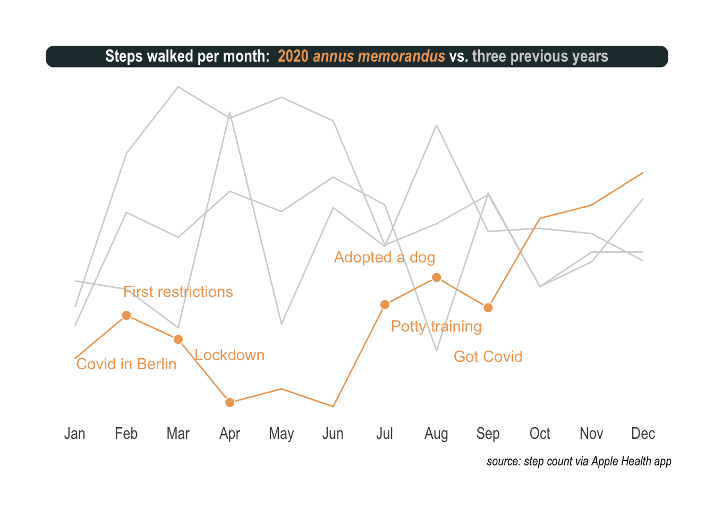

2020 was a devastating year. The damage to health, wealth, and well-being is enormous and so much have changed. For everyone. People have been sick or even died. Some are out of work and struggling to pay their bills. Meanwhile millions of children are missing out on time in school. Major events like this pandemic end up defining an era and a whole generation that lives through it will never forget how it affected them. And we are not out of the woods quite yet.
Despite the first headlines in the newspapers, I started the year like any other, ignorant of the problems that loomed ahead. Not unlike so many others, I ended up unexpectedly spending most of my time at home. Because of this strange turn of events, I was offered a chance to start living a well-balanced life. January is the time for a year end review. I look forward to using this post walking you through my year via a very simple proxy: every little step I’ve made toward 2021.
How to extract the data
I do not use third-party apps or devices to do so but my iPhone alone already does a pretty good job at recording how much I walk. Exporting the Health app data isn’t very difficult, and can be summed up in only three steps:
- Launch the Health app
- Tap on your profile picture
- Tap on ‘Export All Health Data’
There is no need to be a database demon to extract useful information from this file. The XML package makes it easy to read. You probably won’t have the data in the same directory as me though.
healthApp <- xmlParse('~/Downloads/apple_health_export/Export.xml')['//Record'] %>%
XML:::xmlAttrsToDataFrame()This is the information my iPhone has recorded about me. Every day, every hour, and for years now.
summary(healthApp)
## type sourceName sourceVersion device
## Length:90932 Length:90932 Length:90932 Length:90932
## Class :character Class :character Class :character Class :character
## Mode :character Mode :character Mode :character Mode :character
## unit creationDate startDate endDate
## Length:90932 Length:90932 Length:90932 Length:90932
## Class :character Class :character Class :character Class :character
## Mode :character Mode :character Mode :character Mode :character
## value
## Length:90932
## Class :character
## Mode :characterIt will make things easier down the road if we transform the information stored and split it into new columns.
healthRecord <- healthApp %>%
mutate(value = as.numeric(value),
date = ymd_hms(endDate)) %>%
select(type, unit, date, value) %>%
mutate(year = year(date),
month = month(date),
label_m = month(date, label = TRUE),
day = day(date),
label_d = wday(date, label = TRUE, week_start = 1),
hour = hour(date),
date = as_date(date))glimpse(healthRecord)
## Rows: 90,932
## Columns: 10
## $ type <chr> "HKQuantityTypeIdentifierStepCount", "HKQuantityTypeIdentifie…
## $ unit <chr> "count", "count", "count", "count", "count", "count", "count"…
## $ date <date> 2016-01-16, 2016-01-16, 2016-01-16, 2016-01-16, 2016-01-16, …
## $ value <dbl> 367, 503, 477, 486, 291, 397, 44, 8, 10, 43, 40, 429, 478, 77…
## $ year <dbl> 2016, 2016, 2016, 2016, 2016, 2016, 2016, 2016, 2016, 2016, 2…
## $ month <dbl> 1, 1, 1, 1, 1, 1, 1, 1, 1, 1, 1, 1, 1, 1, 1, 1, 1, 1, 1, 1, 1…
## $ label_m <ord> Jan, Jan, Jan, Jan, Jan, Jan, Jan, Jan, Jan, Jan, Jan, Jan, J…
## $ day <int> 16, 16, 16, 16, 16, 16, 16, 16, 16, 16, 16, 16, 16, 16, 16, 1…
## $ label_d <ord> Sat, Sat, Sat, Sat, Sat, Sat, Sat, Sat, Sat, Sat, Sat, Sat, S…
## $ hour <int> 1, 2, 2, 2, 2, 2, 2, 3, 4, 4, 5, 20, 20, 20, 20, 20, 20, 20, …Right, that’s all we need to explore my steps over the years.
How does 2020 differ from other years
There is no easy answer to that question, but at least I can show how it affected me personally.
healthRecord %>%
filter(type %in% c('HKQuantityTypeIdentifierStepCount', 'HKQuantityTypeIdentifierDistanceWalkingRunning')) %>%
group_by(year, unit) %>%
filter(year %>% between(2017, 2020)) %>%
summarize(value = sum(value) %>% round()) %>%
pivot_wider(year, names_from = unit) %>%
rename(steps = count) %>%
knitr::kable(align = 'r')| year | steps | km |
|---|---|---|
| 2017 | 2066294 | 1387 |
| 2018 | 1735584 | 1191 |
| 2019 | 1745685 | 1216 |
| 2020 | 1217777 | 817 |
So I’ve walked less. Yes, that doesn’t come as a big surprise. I’ve stopped going to work and my work implied a lot of traveling across Europe. There has been a lockdown in Germany and all shops and restaurants were closed. Long story short: I have always been allowed to go out, but didn’t need as much, and not to usually crowded places, because all were closed. Still, I manage to score over 800km. That’s about enough to cover the distance from Berlin to Paris!
However, 2020 has seen different phases and the situation was, periodically, semi-normal. The year surely cannot be seen as normal but not always as abnormal as during the lockdown.
What does it look like per month
To answer this we need to have a look at the step count, this time per month. This is how 2020 looks like.
healthRecord %>%
filter(type == 'HKQuantityTypeIdentifierStepCount' & year == 2020) %>%
group_by(year, month) %>%
summarize(steps = sum(value)) %>%
ggplot(aes(x = month, y = steps, colour = as.factor(year))) +
geom_line() +
scale_color_manual(values = c('#F0A660')) +
scale_x_continuous(breaks = 1:12, labels = healthRecord$label_m %>% unique()) +
theme_ipsum() +
theme(axis.text.y = element_blank(),
axis.title.x = element_blank(),
axis.title.y = element_blank(),
panel.grid.minor = element_blank(),
panel.grid.major = element_blank(),
legend.position = 'none') +
labs(title = '<b>Steps walked per month in</b> <span style = "color:#F0A660;">2020</span>',
caption = 'source: step count via Apple Health app') +
theme(plot.title.position = 'plot',
plot.title = element_textbox(size = 12, color = 'white', fill = '#23373B', box.color = '#23373B',
halign = 0.5, linetype = 1, r = unit(5, 'pt'), width = unit(1, 'npc'),
padding = margin(2, 0, 1, 0), margin = margin(3, 3, 3, 3)))
Exactly was I was thinking. There is a lot of up and down. First an unusual sedentary way of life for me. Then, masks, social distancing, and other interventions slowed the spread of the virus and when the warmer days of summer arrived, the situation improved drastically. Slightly off the main topic but worth mentioning, being permanently grounded opened up new possibilities like getting a dog. Noticed the ascent in the summer? That’s me potty training the puppy all day long before a nasty twist. I absolutely cannot tell how, but I got infected with Covid in the park in September.
To properly annotate the previous plot, we can prepare the following data frame.
annotation <- healthRecord %>%
filter(type == 'HKQuantityTypeIdentifierStepCount' & year == 2020 & month %in% c(2:4, 7:9)) %>%
group_by(month) %>%
summarize(steps = sum(value)) %>%
mutate(label = c('Covid in Berlin', 'First restrictions', 'Lockdown', 'Adopted a dog', 'Potty training', 'Got Covid'),
color = '#F0A660',
vjust = c(-30000, 30000, 30000, 30000, -30000, -30000))Finally, we surely want the full picture with previous years and annotations added.
healthRecord %>%
filter(type == 'HKQuantityTypeIdentifierStepCount' & year %>% between(2017, 2020)) %>%
group_by(year, month) %>%
summarize(steps = sum(value)) %>%
ggplot(aes(x = month, y = steps, colour = as.factor(year))) +
geom_line() +
scale_color_manual(values = c('lightgrey', 'lightgrey', 'lightgrey', '#F0A660')) +
scale_x_continuous(breaks = 1:12, labels = healthRecord$label_m %>% unique()) +
theme_ipsum() +
theme(axis.text.y = element_blank(),
axis.title.x = element_blank(),
axis.title.y = element_blank(),
panel.grid.minor = element_blank(),
panel.grid.major = element_blank(),
legend.position = 'none') +
annotate('point', x = annotation$month, y = annotation$steps,
size = 3, shape = 21, fill = "#F0A660", color = 'white') +
annotate('text', x = annotation$month, y = annotation$steps + annotation$vjust,
label = annotation$label, color = annotation$color) +
labs(title = '<b>Steps walked per month:</b> <span style = "color:#F0A660;">2020 *annus memorandus*</span> vs. <span style = "color:lightgrey;">three previous years</span>',
caption = 'source: step count via Apple Health app') +
theme(plot.title.position = 'plot',
plot.title = element_textbox(size = 12, color = 'white', fill = '#23373B', box.color = '#23373B',
halign = 0.5, linetype = 1, r = unit(5, 'pt'), width = unit(1, 'npc'),
padding = margin(2, 0, 1, 0), margin = margin(3, 3, 3, 3)))
There are two important points I want to make. First, the sublime hrbrthemes with some fine-tuning is real hot stuff and ggtext, a more recent discovery, helps a lot with titles, colors, and annotations. Second, once nicely presented, the effect of the virus becomes so clear and notable. It’s like these pictures of restaurants that only seat people at every other table or streets empty but for a few surgically masked passerby.
What I mean is that on this plot I can see the virus as clearly as with an electron microscope.
What does it mean to adopt a dog
Quite a lot of work, surely, but a lot of fun and joy all the same. Risk of catching a potentially deadly virus aside, obviously.
Can I show you this on a plot as well. Certainly. This is somehow more challenging but heatmaps can be a very good alternative to visualize time series, especially when the time frame is repeating, like here months and weeks. The tricky part is to generate the missing time stamps. When I didn’t move, at night mostly, my iPhone recorded nothing and as a consequence my heatmaps contain information holes. Fortunately, the tidyverse proposes the complete function that turns implicit missing values into explicit ones.
The rest is pretty straight forward. I used a nice viridis color scheme and facet_grid to visualize the last two years, hour by hour.
healthRecord %>%
filter(type == 'HKQuantityTypeIdentifierStepCount' & year %>% between(2019, 2020)) %>%
select(year, label_m, label_d, hour, value) %>%
complete(year, label_m, label_d, hour, fill = list(value = 0)) %>%
group_by(year, label_m, label_d, hour) %>%
summarize(steps = sum(value)) %>%
ggplot(aes(x = label_d, y = hour, fill = log2(steps)))+
geom_tile(color = 'white', size = .3) +
scale_fill_viridis(option ="D", na.value = "#450466",) +
scale_y_reverse(breaks = c(6, 12, 18), labels = c('6am', 'noon', '6pm')) +
facet_grid(year~label_m) +
theme_ipsum() +
labs(title = "<b>Steps walked per hour:</b> <span style = 'color:#F0A660;'>2020 *annus memorandus*</span> vs. <span style = 'color:lightgrey;'>2019</span>",
caption = 'source: step count via Apple Health app') +
theme(plot.title.position = "plot",
plot.title = element_textbox(
size = 12,
color = "white", fill = "#23373B", box.color = "#23373B",
halign = 0.5, linetype = 1, r = unit(5, "pt"), width = unit(1, "npc"),
padding = margin(2, 0, 1, 0), margin = margin(3, 3, 3, 3))) +
theme(panel.grid.major = element_blank(),
legend.position = "none",
axis.text.x = element_text(angle = 90, size = 6),
axis.text.y = element_text(),
axis.title.x = element_blank(),
axis.title.y = element_blank(),
strip.text.y = element_blank(),
panel.spacing = unit(.1, "lines"))
Again, you don’t need a magnifying glass to see the absolute mess my life was in 2019 (upper part). Chaos that still reigns, albeit with less intensity, during the first half of 2020 (lower part). During the last days of July and the whole of August, I went to the park every hour. One cannot underestimate how often a puppy needs to pee, trust me on this one. But really mind blowing is the pattern that emerges after that, starting in September and continuing throughout the last part of the year. There are three bands, each one precisely when I walk my dog: around breakfast time, lunch, and dinner.
More than a well balanced-life, a dog means operations are planned to the last minute of a 24-hour day.
There is good news coming in 2021
My only regret is that I do not have a precise tracking of my sleeping time. There is some kind of recording on the iPhone but it doesn’t seem to be extremely reliable. That’s a shame as one of my highlights of 2020 was the book why we sleep by Matthew Walker and I took advantage of the time at home to improve my sleep as well. I clearly feel healthier and more productive but cannot show a side-by-side comparison with my sleep pattern. However, I can tell from the heatmaps that toward 2020, my evenings become quieter and quieter as I started reserving this time for more sleep.
I always find reasons to be hopeful. On the Covid front, the vaccination campaigns started and about mid-year, should reach the scale where they’ll have a global impact. Although restrictions and social distancing won’t disappear it will help to live a life much closer to normal than it is now. On a more personal note, I realize that the dog and me managed to fight the sedentary way of life working from home implies and we finished the year pretty strong. Overall, there is a total of 2.96 million steps visualized on the heatmaps which represent quite an achievement. What now? Well onward. 2021, here I am!